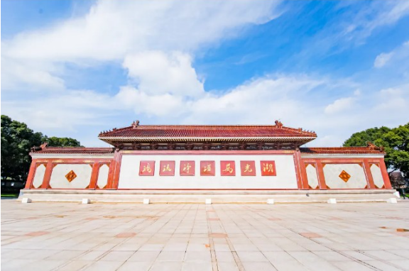
长39.8m高7m · 华夏第一壁 · 赵朴初题字
5座汉白玉石拱桥 · 佛教五明智慧 · 横跨香水海
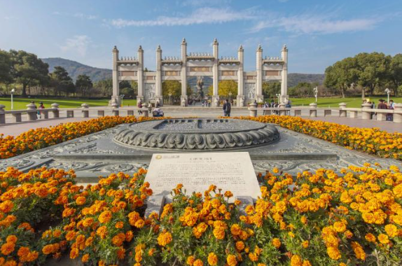
巨型青铜佛足印 · 32种吉祥图案 · 朝圣核心
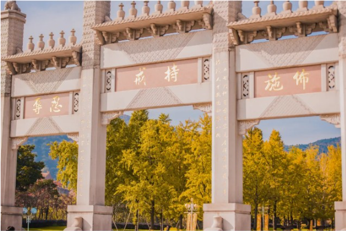
高16.8m石牌坊 · 五方五佛六度 · 核心区入口
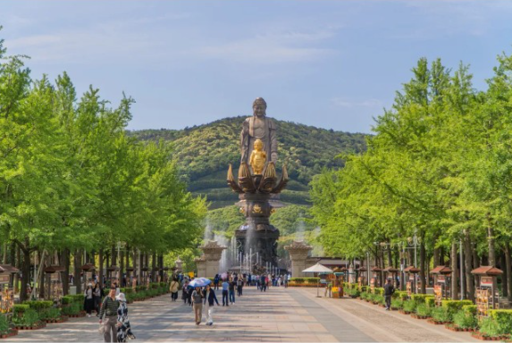
长约250m林荫道 · 印度菩提树 · 禅意拱廊
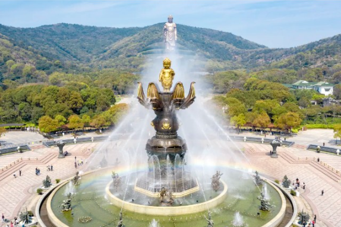
总高27.2m · 鎏金太子佛 · 定时音乐表演
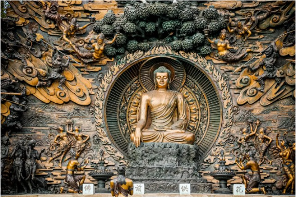
长26m巨型石雕 · 佛陀成道历程 · 艺术珍品
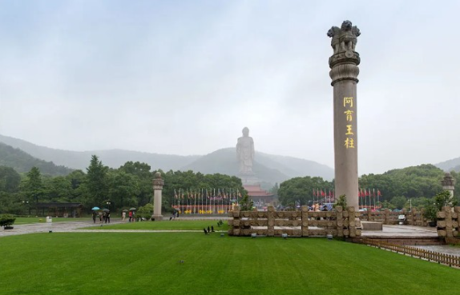
高16.9m重180吨 · 整块花岗岩 · 佛法东传标志
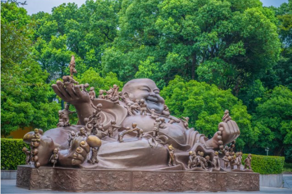
高3m青铜群雕 · 百子嬉戏 · 多子多福
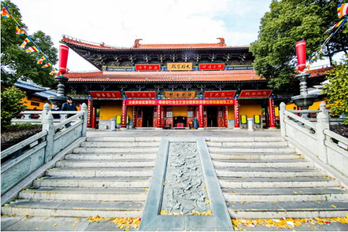
唐代古刹30亩 · 千年禅宗祖庭 · 江南第一钟
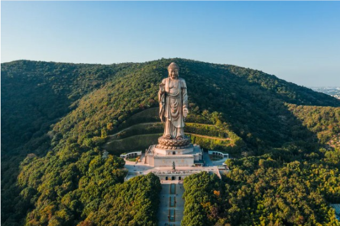
高88m · 世界最高青铜立佛 · 灵山地标
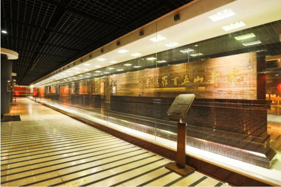
10000㎡三层展馆 · 万佛殿 · 免费参观
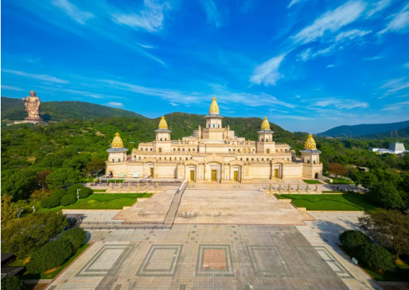
72000㎡ · 东方卢浮宫 · 非遗艺术殿堂
高30m藏式碉楼 · 小布达拉宫 · 转经祈福
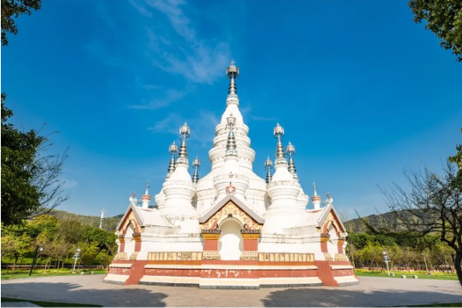
主塔16.9m · 傣族佛教风格 · 南传佛教建筑
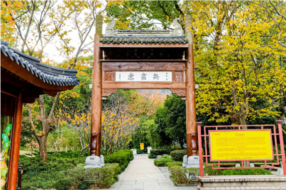
600㎡四合院 · 禅意书斋 · 文化雅集
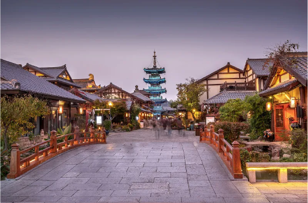
8000㎡ · 拈花微笑雕塑 · 大型活动场地
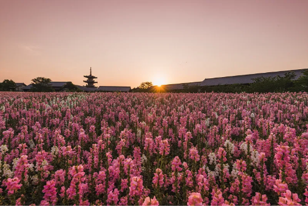
30000㎡四季花田 · 格桑花海 · 禅意打卡
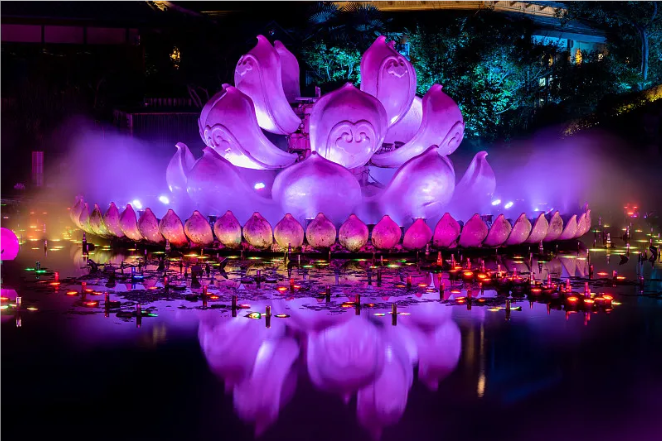
长800m禅意街区 · 手作店铺 · 夜游胜地
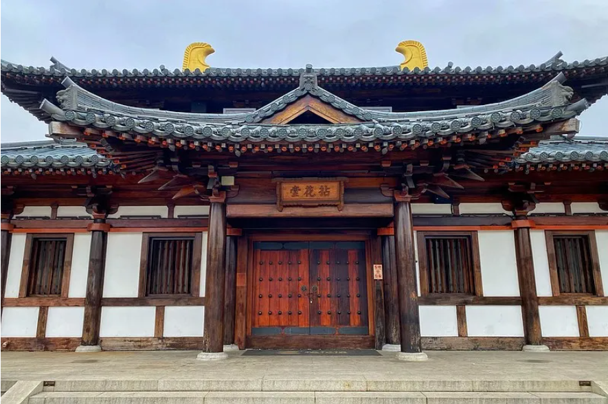
1200㎡禅堂 · 禅修体验 · 抄经品茗
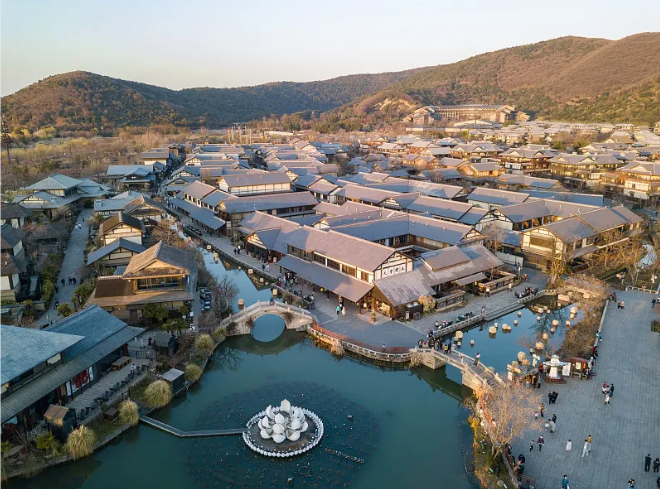
5000㎡景观湖 · 水上栈道 · 水幕表演
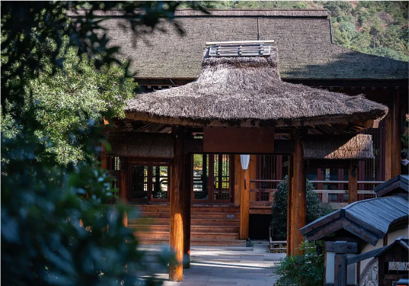
20000㎡山林 · 天然氧吧 · 徒步静修
华夏第一壁 · 赵朴初题字
5座汉白玉石拱桥 · 佛教五明智慧
佛祖脚印复刻 · 32种吉祥图案
高16.8m石牌坊 · 核心区入口
250m菩提林荫道 · 禅意拱廊
27.2m动态群雕 · 定时音乐表演
26m巨型石雕 · 佛陀成道
16.9m花岗岩石柱 · 佛法东传
青铜群雕 · 多子多福
唐代古刹 · 千年禅宗祖庭
88m世界最高青铜立佛
10000㎡三层展馆 · 万佛殿
72000㎡ · 东方卢浮宫
藏式碉楼 · 小布达拉宫
傣族佛塔 · 南传佛教建筑
赵朴初故居复刻 · 四合院
华夏第一壁 · 赵朴初题字
5座汉白玉石拱桥 · 佛教五明智慧
高16.8m石牌坊 · 核心区入口
唐代古刹 · 千年禅宗祖庭
88m世界最高青铜立佛
72000㎡ · 东方卢浮宫
藏式碉楼 · 小布达拉宫
傣族佛塔 · 南传佛教建筑
赵朴初故居复刻 · 四合院
佛祖脚印复刻 · 32种吉祥图案
250m菩提林荫道 · 禅意拱廊
27.2m动态群雕 · 定时音乐表演
26m巨型石雕 · 佛陀成道
16.9m花岗岩石柱 · 佛法东传
青铜群雕 · 多子多福
10000㎡三层展馆 · 万佛殿